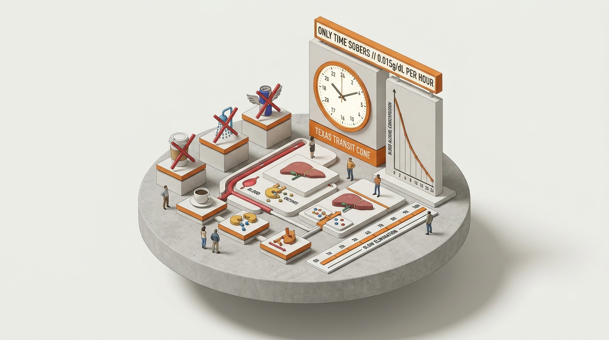

Fatigue & Highway Hypnosis
Understanding cognitive trance, involuntary microsleeps, and empirical physiological countermeasures during extended highway transit.
The state of physical exhaustion or continuous uninterrupted highway corridor driving produces involuntary sensory dulling known as Highway Hypnosis. Operating a motor vehicle while impaired by severe fatigue constitutes a critical failure of due care under Texas Transportation Code § 545.401.

Symptoms vs. Mandated Remedies
Highway hypnosis differs from creeping biological exhaustion: it is a dulling cognitive trance produced by visual monotony. Contrast the warning indicators against verified statutory countermeasures below. Select items to review diagnostic details.
Symptoms of Highway Hypnosis & Drowsiness
Heavy Eyelids & Frequent Blinking
Involuntary eyelid fluttering, slow pupil readjustment, and systemic inability to maintain stable optical focal points.
Fixed Gaze & Tunnel Vision
Staring blankly at center roadway lines without dynamic 12–15 second visual horizon scanning. Peripheral hazard perception drops by 60%.
Missing Exits & Road Signs
Inability to recall the last 3 to 5 miles traveled. Cognitive auto-pilot takes over motor controls while memory encoding completely shuts down.
Drifting Lane Vector
Inadvertently crossing continuous shoulder rumble strips or lane paint. Over-correcting steering motions indicate dangerously reduced muscular control.
Yawning & Head Nodding (Microsleeps)
Lethargic posture accompanied by involuntary 1–3 second brain shutdowns. At highway speeds, a 2-second sleep spans over 200 feet completely uncontrolled.
Effective Statutory & Physical Remedies
The 2-Hour / 100-Mile Rest Mandate
Pull completely into designated Texas Safety Rest Areas. Step outside into ambient air, stretch, and reset circulatory arterial blood flow to restore brain oxygenation.
Active Visual Scanning (Shifting Gaze)
Continuously scan left shoulder, center lane, right shoulder, rearview mirrors, and 15-second distant horizon every 2–5 seconds to intentionally disrupt hypnotic trance fixation.
Cabin Environment Modulation
Lower interior temperature, cycle fresh outside airflow rather than stagnant cabin air, and eliminate stale carbon dioxide concentrations that induce drowsiness.
Nap & Hydration Protocol
A planned 15–20 minute power nap at an authorized highway staging post. Caffeine only temporarily masks adenosine receptors and is never a substitute for actual sleep.
Avoid Cruising Alone Through Dawn/Dusk
Circadian rhythm dip cycles (2:00 AM – 6:00 AM and 2:00 PM – 4:00 PM) create the highest collision fatality rates on interstate and rural corridors.
Topic 12 Knowledge Verification
How do you prevent highway hypnosis?
Turn up the radio volume to maximum and chew caffeinated gum.
Keep your eyes moving and stop every 2 hours.
Engage cruise control and fixate strictly on the vehicle ahead.
Rely on highway rumble strips to alert you when lane drift occurs.